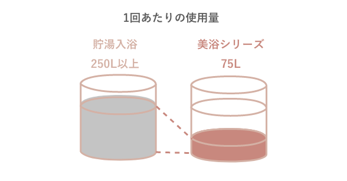

【介護浴槽】シャワー入浴専門ブランド
「美浴」が入浴を変えます。
-
わたしたちエア・ウォーターが開発した「美浴」は
看護・介護環境における⼈⼿不⾜・介助者の
⼤きな負担・コスト⾯等での課題を解決いたします。
⼊浴者の最⾼の笑顔を実現しつつ、
介助者の介助時間短縮、経営者の経営コスト軽減、
⼈⼿不⾜解消を支援します。
「美浴」だから実現できるこだわり
身体全体を包み込む⾄⾼のシャワー⼊浴
リラックスさにこだわった快適空間。
独⾃のミストシャワーとドーム構造によるサウナ効果で、
⼊浴者の⾝体をしっかりと温め、お湯に包まれるような⼊浴感を演出します。
身体の露出を減らしてプライバシーに配慮し、
静⽔圧もかからないため、⾝体への負担も軽減。
⼊浴者への⼼地よい⼊浴感と安⼼感を考えて実現した美浴を、
是⾮堪能ください。
美浴シリーズの4つの特徴
-
-
⼊浴者の快適さを追求
熱を逃さないサウナのような空間に
体を包みこむ上質なミストシャワー⼊浴機器内の熱を逃さず暖かさを維持する
独⾃のドーム構造は入浴者のプライバシーも保護します。
お湯にもつからず静⽔圧もかからない仕様に加え、
ミストシャワーが身体に優しい⼊浴をご提供します。
-
-
-
介助者の負担軽減
介助環境を⼤幅に改善できる設計お湯を貯めずに済むドーム構造と
ボディシャンプー機能により、
入浴準備時間・先身時間の短縮を実現。
湯気や湿気も浴室にこもりにくく、マスクをしながら介助も可能。
⼊浴者の溺れ・誤飲の⼼配もないため、
安⼼した介助環境をご⽤意できます。
-
-
-
経営⾯の課題も解決
コスト削減と⼈⼿不⾜解消を実現貯湯式に対して約3分の1程度の湯量で済むため、
上下⽔道料⾦や光熱費を⼤幅削減。
介助時間の軽減により介助⼈数削減。
⼀⼈あたりの⼊浴時間も削減でき、⼊浴者増加も可能。
⼊浴者・介助者・経営者、
3者にとっての満⾜度を追求しました。
-
-
-
密閉・密集・密接を防ぎ、
感染対策に貢献常に新しいお湯を使⽤するため交差感染を防⽌。
⼊浴時間と介助⼈数の削減により密集を防ぎ、
ボディシャンプー機能による洗⾝で近距離接触を軽減します。
-
美浴シリーズの商品案内


動画紹介
-
介護⽤シャワー⼊浴装置
『美浴』 -
介護⽤コンパクトシャワー⼊浴装置
『シャワーオール』
⼊浴者の身体の状態に合わせてお選びいただけます
体感ショールームのご案内
1.体感ショールームで できること
やさしく、⼼地いいミストシャワーに包まれて
「温かさ」と「くつろぎ」を是⾮ご体感ください。
2.体感するショールームをお選びください
ショールームによっては、
ご希望の浴槽がおいていない場合がございます。
あらかじめご了承ください。
-
-
-
東京ショールーム
展⽰機器 NS5000,NB2500,RS05,シャワーオール 住所 〒183-0035 東京都府中市四⾕5-36 アクセス - ・京王線「聖蹟桜ヶ丘駅から約2.8km
- ・JR南武線・武蔵野線「府中本町駅」から4.3km
- ・中央道「国立府中インター」から車で約5分
お問い合わせ 0120-048-067（エア・ウォーター） -
釧路ショールーム
展⽰機器 NS5000 住所 〒085-0032 釧路市新栄町17番20号 アクセス - ・根室本線「釧路駅」から約1.4km
お問い合わせ - ・0154-23-9147(北海道エア・ウォーター釧路産業・医療営業所)
- ・0154-25-4088 (エア・ウォーター・ハローサポート釧路営業所)
-
旭川ショールーム
展⽰機器 NS5000,シャワーオール 住所 〒078-8235 旭川市豊岡5条4丁目1番1号 アクセス - ・宗谷本線「旭川四条駅」から約2.2km
お問い合わせ - ・0166-34-7868(北海道エア・ウォーター旭川産業・医療営業所)
- ・0166-31-1338(エア・ウォーター・ハローサポート旭川営業所)
-
札幌ショールーム
展⽰機器 NS5000,NB2500,RS05,シャワーオール 住所 〒003-0805 札幌市白石区菊水5条2丁目3番12号 アクセス - ・市営地下鉄東西線「菊水駅」から約400m
- ・「札幌西インター」から車で約23分
- ・「札幌南インター」から車で約18分
お問い合わせ - ・011-212-8228 (北海道エア・ウォーター医療事業部)
- ・011-531-1345 (エア・ウォーター・ハローサポート札幌営業所)
-
福島ショールーム
展⽰機器 NS5000,NB2500,シャワーオール 住所 〒963-8841 福島県郡山市字山崎400番地6 アクセス - ・東北新幹線・東北本線「郡山駅」から約2.8km
- ・東北自動車道「須賀川インター」から車で約20分
お問い合わせ 022-742-1210 (東北エア・ウォーター) -
神⼾体感ルーム
展⽰機器 NS5000,NB2500,シャワーオール 住所 〒650-0047 兵庫県神戸市中央区港島南町1-3-1 アクセス - ・「三宮インター」から車で約15分
- ・ポートライナー「医療センター駅」から500m
お問い合わせ 0120-048-067（エア・ウォーター）
-
3.体感ショールームのご来場前にご確認ください
予約制となっておりますので、
ご来場前のご予約をお願いいたします。
ご持参いただきたいもの
・⽔着等の濡れても問題ない⾐類
タオルやサンダル等はご⽤意しています
ご予約・ご質問は各ショールームに直接お問い合わせくださいませ。
ランニングコストと⼊浴介助負担を低減
少ない湯量で⼊浴が可能なので、⽔道代・光熱費を削減します。
貯⽔タイプに⽐べ使⽤湯量を約70%も節⽔できます。
上下⽔道、ガス料⾦を⼤幅に低減し、ランニングコストを削減します。
- 
⼊浴介助時間を⼤幅に短縮し、介助者の負担を減らします。
⼊浴介助時間は約10分!
貯湯式に⽐べ1/3と⼤幅に短縮されます。
導⼊までの流れ
-
-
設置場所の確認
-
設置先のスペース・搬⼊経路等問題ないか確認いたします。
また、ニーズに合わせた商品の提案もさせていただきます。
-
-
ご契約
-
設置場所等問題なければご契約となります。
定期点検サービス等もご案内させていただきます。
-
設置⼯事
-
＃1設置場所確認の際に、⽔道⼯事等の設置⼯事が
必要となった場合に実施いたします。
-
ご納品
-
弊社担当者より使⽤⽅法や注意点等ご説明させていただきます。
機械操作が苦⼿な⽅でもご安⼼ください。～コールセンターも設けております～使⽤中のトラブル等お問い合わせいただけます。
0120-048-067